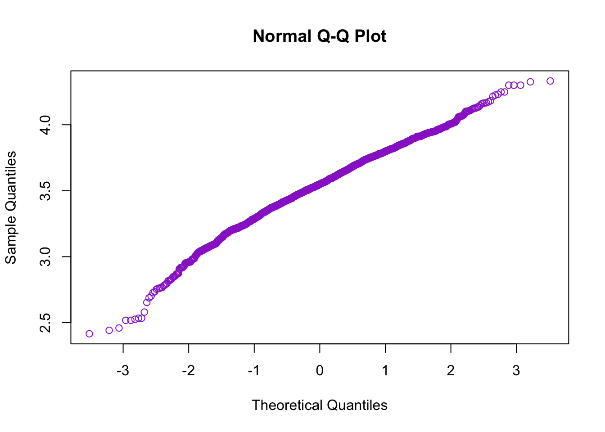
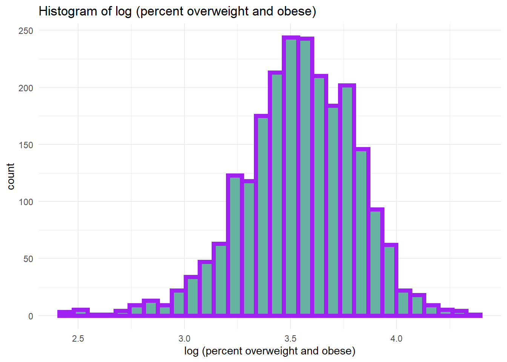
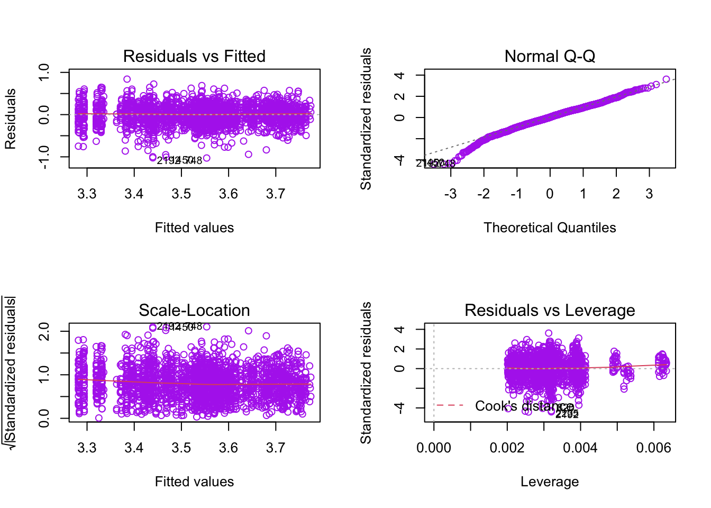

Before fitting the linear regression model, I used two types of transformation to improve model adequacy, a. y’ = log(y), b. y’= y^0.5, Q_Q plot showed that the log transformation has improved data’s normality.

Above are the Q-Q plot and histogram of overweight/obesity data after log transformation. Q-Q plot is approximetly in a straight line, histogram is normally distributed but a bit skewed to the left. Overall, the normality assumption is satisfied.
Based on the transformation above, the model we are going to fit is: \[ log(percentage \space overweight \space or \space obese) = \beta_0 + \beta_1grade \space level + \beta_2median \space income + \beta_3 food \space insecurity \space rate + \beta_4 white \space population \space percentage + \space \beta_5 gender + \beta_6 year\]
kable(summary(lm_1)$coefficients)| Estimate | Std. Error | t value | Pr(>|t|) | |
|---|---|---|---|---|
| (Intercept) | 2.5413224 | 0.2534978 | 10.0250261 | 0.0000000 |
| grade_level | 0.1473630 | 0.0098659 | 14.9366293 | 0.0000000 |
| median_income | -0.0013933 | 0.0011330 | -1.2297687 | 0.2189136 |
| food_insecurity_p | 0.0013798 | 0.0067247 | 0.2051907 | 0.8374419 |
| white_percent | 0.0116375 | 0.0014228 | 8.1795396 | 0.0000000 |
| sex | -0.0377451 | 0.0098560 | -3.8296638 | 0.0001319 |
| year_reported | -0.0102764 | 0.0098587 | -1.0423704 | 0.2973531 |
In the beginning we included 6 independent variables, grade level, median income, food insecurity, gender, and white population percentage. However the model summary showed there are weak correlation between food insecurity (p-value = 0.925) and median income (p-value = 0.113) and year_reported (p-value = 0.215) with response variable y, we further improved the model by using step-wise regression, left 4 variables all significantly influenced the percentage overweight and obese.
\[ log(y) = 2.584 + 0.147x_1 - 0.002x_2 + 0.011x_3 - 0.038x_4\] y = percentage overweight or obese
x1= grade level (0 = elementary, 1 = middle/high school)
x2 = median income (k dollars)
x3 = white population percentage
x4 = sex (0 = male, 1 = female)
kable(summary(lm_2)$coefficients)| Estimate | Std. Error | t value | Pr(>|t|) | |
|---|---|---|---|---|
| (Intercept) | 2.5837777 | 0.1043375 | 24.763647 | 0.0000000 |
| grade_level | 0.1474285 | 0.0098637 | 14.946504 | 0.0000000 |
| median_income | -0.0016188 | 0.0003234 | -5.006178 | 0.0000006 |
| white_percent | 0.0114301 | 0.0010087 | 11.331849 | 0.0000000 |
| sex | -0.0377062 | 0.0098539 | -3.826512 | 0.0001335 |

There is no strange pattern about Residuel vs Fitted plot, and Normal Q-Q plot is basically on a straight line, so the constant variance assumption is met, and this model is valid. Four variables are significant with very small p-value (<0.001). However, due to the limitation of data, the model’s R-squared is equal to 0.2166, which means only 22% of the data is explained by this model. A possible explanation is that other important factors have not been included. We will make improvement when more data is available.
This project works by Yilin (Elaine) Xu, Rio Yan, Jiayi Zhou, and Ximeng Zhao
Visualizations and analyses performed using R (v4.0.2) and RStudio (v1.3.1073).
Additional interactivity added using plotly and Shiny.
Click here to see details of this project.
2020 | Powered by Github.io